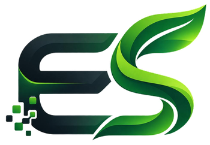

Finalidad educativa
Analizar hábitos ambientales y orientar mejoras académicas.

EcoSys ISC 304AConoce qué datos recopila la encuesta ambiental de EcoSys, para qué se utilizan y cómo puedes consultar o solicitar su eliminación.
Analizar hábitos ambientales y orientar mejoras académicas.
Respuestas individuales no disponibles en el sitio público.
Estadísticas previstas por semana, mes y cierre del año.
Este documento explica el alcance del diagnóstico ambiental. Puedes desplazarte por las secciones o utilizar el índice para acceder a un tema concreto.
EcoSys es un proyecto académico de Ingeniería en Sistemas Computacionales del Instituto Tecnológico Superior de San Andrés Tuxtla.
La administración técnica corresponde al desarrollador de EcoSys y la supervisión académica se realiza en coordinación con un docente del instituto. Para preguntas sobre el tratamiento de datos, utiliza el correo de privacidad indicado en este documento.
Las respuestas se utilizarán para estudiar hábitos ambientales declarados por los participantes y apoyar el análisis de oportunidades de mejora en el entorno académico.
El diagnóstico no constituye por sí mismo una medición directa de consumos, residuos ni resultados de toda la institución.
El formulario de diagnóstico solicita perfil de participante (estudiante, docente o personal administrativo), grupo o área, identificador de participación y respuestas a 15 preguntas.
La recopilación de nombres está desactivada inicialmente. Aunque no se soliciten, un identificador combinado con el grupo o área podría permitir una identificación indirecta y debe protegerse.
Responder la encuesta es voluntario. Cada persona debe poder leer este aviso antes de enviar sus respuestas y decidir si desea participar.
No se deben enviar datos falsos ni suplantar la identidad de otra persona. Cuando corresponda por la edad de los participantes o por las reglas institucionales, deberán seguirse los procedimientos de autorización aplicables.
Las respuestas se almacenarán mediante una API de Cloudflare Workers conectada a una base de datos Cloudflare D1. El formulario utiliza Cloudflare Turnstile para reducir envíos automatizados.
El acceso a los registros individuales debe limitarse a los administradores autorizados. La página pública no ofrece un listado ni un servicio de consulta de respuestas individuales.
Ninguna medida técnica elimina por completo los riesgos; los responsables deberán gestionar los accesos y revisar regularmente la seguridad de los datos.
El proyecto contempla análisis semanales, mensuales y anuales. Las estadísticas públicas se consultan a partir de los registros disponibles en Cloudflare D1. Los informes periódicos podrán elaborarse a partir de estos datos; su emisión programada todavía no es automática.
Los resultados públicos se muestran de forma agregada. La versión actual establece un mínimo de 10 respuestas para mostrar porcentajes y limita los desgloses por perfil cuando algún grupo cuenta con menos de 5 respuestas.
El proyecto contempla un periodo de 12 meses de recopilación y análisis, contado a partir de la fecha de inicio que documenten los responsables.
Al finalizar, los responsables deberán autorizar y ejecutar la eliminación de respuestas individuales e identificadores que ya no sean necesarios. Podrán conservarse las estadísticas verdaderamente agregadas que no permitan identificar personas.
Los participantes pueden escribir al correo del proyecto para pedir información sobre el tratamiento de sus datos o solicitar su acceso, corrección o eliminación, según lo que corresponda.
Para localizar un registro, podría solicitarse el identificador de participación y la información mínima necesaria para tramitar la petición, sin requerir contraseñas. El equipo responsable debe verificar cada caso antes de modificar o eliminar datos.
Correo para dudas y solicitudes relacionadas con las encuestas.
El sitio se publica mediante GitHub Pages. Las funciones de encuesta y base de datos utilizan servicios de Cloudflare. Estos proveedores pueden procesar información técnica necesaria para ofrecer sus servicios, de acuerdo con sus respectivas condiciones y políticas.
Los responsables deberán revisar las condiciones aplicables, los accesos y cualquier tratamiento o transferencia de datos asociado a la operación del proyecto.
Este aviso se actualizará cuando cambien las finalidades, los datos solicitados, los responsables o el plazo de conservación. Los cambios relevantes deben comunicarse antes de que entren en vigor.
Los responsables mantendrán actualizado este aviso y documentarán la fecha de inicio del periodo anual de análisis y las decisiones de conservación de datos.
La información debe utilizarse para cumplir objetivos académicos claramente establecidos, con transparencia y respeto por las personas participantes.